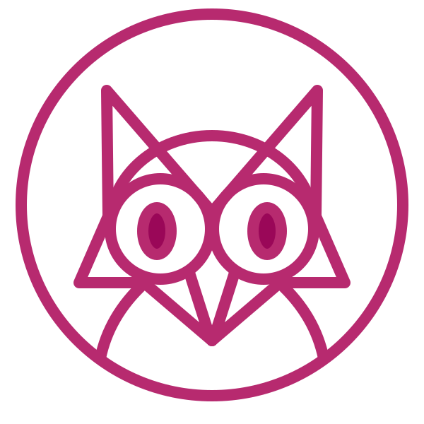

Ferramenta
FerramentaFerromark 4.0, a Markdown renderer for Rust and Node.js
Markdown, rendered exactly. And faster than every engine we measured.
Ferromark turns plain-text Markdown into clean, safe HTML for documentation sites, publishing tools and applications. A native Rust engine with bindings for Node.js, it agrees with every example in the CommonMark specification and led all twenty libraries in our comparison.
- 652 of 652CommonMark 0.31.2 examples
- 28 of 28GFM extension examples
- 20 of 20measured libraries it led
- Rust 1.95+Node.js 22.12+, MIT license
Plain text in. A finished page out.
Markdown is how most technical writing is typed today. READMEs on GitHub, documentation sites, release notes, chat messages, notes apps and the answers of AI assistants are written as plain text with a few marks: a pound sign for a heading, asterisks for emphasis, hyphens for a list. The marks stay readable for the person who writes them. A browser cannot display them, though. Something has to translate the text into HTML, the language of web pages.
That translator is a Markdown renderer. It reads every character and decides which marks belong together. Is this asterisk emphasis, or a multiplication sign? Does this indented line continue the list, or start a block of code? Then it writes the matching HTML. Most people never see it. They notice it only when it gets something wrong: a list that falls apart, a link that swallows a sentence, a page that takes too long to build.
Ferromark is that translator, built to be unnoticeable: exact on the awkward document, fast on the ten-thousandth one, and careful with text it did not write.
Ahead of every library we measured.
Twenty Markdown libraries, 57 real documents, two machines. Ferromark delivered the most throughput in every comparison, natively in Rust and through Node.js.
Why speed matters for text: a documentation site with a few thousand pages renders all of them on every build. A chat app renders each message as it arrives. A search index rereads everything when the content changes. Each millisecond is paid thousands of times over: in waiting developers, in CI minutes, in server costs, in battery.
Time for the same work
Ferromark = 1×. A bar of 2.35× means that library needed 2.35 times as long.
Ferromark led all twenty measured libraries; the chart shows the best known. All twenty libraries, methods and raw data
Show the figures as a table
Inside the engine.
One crate, four modules. The speed comes from how the work is organized, not from work that was skipped.
One block of memory. Ferromark keeps a whole document in one arena, a single block of memory that is filled, used and released at once instead of in thousands of small pieces. It scans bytes with specialized routines and SIMD instructions where the processor offers them, and it reuses buffers from one document to the next. None of this changes the result.
Between parsing and rendering, the tree is yours: inspect it, or, in Rust, run ordered transform passes over it. The renderer then hands every code block to your hooks.
- allocator
- Arena allocation and buffers
- ast
- Document nodes, source spans, visitors
- parser
- Markdown to tree
- renderer
- HTML output and hooks
652 of 652. Not one shortcut.
Speed is easy if you skip the hard cases. Every result here is backed by specification fixtures you can run yourself.
In 2014, a group of developers set out to settle what Markdown actually means. The result, CommonMark, is a specification with hundreds of worked examples: this input, exactly this output. GitHub documented its own extensions, tables, strikethrough, task lists and autolinks, the same way.
Ferromark's specification profile agrees with all 652 CommonMark examples and all 28 GFM extension examples. It runs every example again with Windows and classic Mac line endings, 1,304 variants, and the output must not change. It compares itself with cmark and cmark-gfm, the reference implementations, on their own test corpus.
When a faster version of a routine is proposed, the document structure, source positions and HTML are compared before anything is timed. A change in behavior needs its own explanation and its own tests. It cannot arrive quietly as the price of going faster.
- CommonMark 0.31.2 examples652 / 652
- GFM extension examples28 / 28
- Every example again with CR and CRLF line endings1,304 / 1,304
- Original cmark and cmark-gfm corpus106 / 106
How well-known libraries agree with the specification
Measured 2026-10-10 with each library's own specification settings. Conformance methodology
| Library | CommonMark 0.31.2, 652 examples | GFM extensions, 28 examples |
|---|
Richer documents, still plain text.
Captions, credits, merged table cells, highlights and notes, written in Markdown and rendered as proper HTML.
Plain Markdown stops where real publishing begins. A photo needs a caption, a quotation needs its source, a price table needs a cell that spans two columns. Usually that means falling back to raw HTML, or to a shortcode only one tool understands.
Ferromark Flavored Markdown adds these features as a small set of syntax that still reads naturally as text. Each one is off until you turn it on, so documents that don't use them pay nothing for them, and standard CommonMark keeps meaning exactly what it means.
Punctuation that speaks the language.
Straight quotes become proper ones, in fifteen languages, each by its own rules.
The typewriter gave us one straight quotation mark for everything. Typesetters never accepted it, and neither do careful readers. English opens a quotation with “, German with „, French sets « guillemets » with space inside them. An optional typography pass turns straight quotes, apostrophes and ellipses into the right characters after parsing, for the one language your application chooses. Ferromark never guesses the language. Code, links and raw HTML stay exactly as written.
Real output of each language's pass. Supported: cs, da, de, en, es, fi, fr, it, nb, nl, pl, pt, ru, sv, uk.
Recognition is not permission.
Ferromark can read raw HTML without letting it through.
Markdown allows raw HTML. That is handy for trusted authors
and dangerous for everyone else: a comment field that passes an
onerror handler through is an attack waiting to happen. Ferromark keeps
recognizing HTML separate from emitting it. In Node.js the untrusted mode is the
default: raw HTML is escaped, and unsafe link schemes such as
javascript: are filtered. In Rust, one option turns sanitizing on.
The engine is written in Rust, so whole classes of memory errors cannot compile. Unsafe code is confined to a few small, documented SIMD and allocator spots. Input is bounded too: block nesting stops at 100 levels by default and returns an error instead of exhausting the stack.
A comment someone typed
comment.md
Untrusted, the Node.js default
renderPolicy: 'untrusted'
The tag arrives as visible text; the link goes nowhere.
Trusted, for your own content
renderPolicy: 'trusted'
The tag and the script link reach the page as written.
| API | Default | For untrusted Markdown |
|---|---|---|
| Rust | Raw HTML passthrough | HtmlRendererOptions::sanitize |
| Node.js | Escaped raw HTML, filtered URL schemes | Keep renderPolicy: 'untrusted' |
Code highlighted. Diagrams drawn.
Technical writing is full of code samples and diagrams. Ferromark hands each code block to a hook. Connect Ferriki and the code comes back highlighted with Shiki-compatible grammars and themes. Connect Ferrigura and a Mermaid block becomes a static SVG diagram, rendered on the server without a browser. Both are separate engines from the same workshop. Ferromark contains neither until you add it, and any other highlighter fits the same hook.
A Rust fence
example.md
Highlighted by Ferriki
A Mermaid fence
flow.md
Drawn by Ferrigura
From Markdown to components. Parse once, use it everywhere.
Documentation sites built with React and similar frameworks
mix Markdown with components: an interactive chart inside an article, a tabbed code
example. That format is called MDX. compileJsx turns an MDX document into
JSX, and your build supplies the components. Ferromark never executes the authored
JavaScript while compiling and adds no framework imports of its own.
A parsed document holds more than HTML. Ask it for every link and image with its exact position, and a broken-link check becomes a loop over a list. Ask for ordered heading sections with their final IDs, ready for a search index. Ask for a static Markdown export that says exactly what it left out. None of it parses the document a second time.
MDX in, JSX out
compileJsx(source, { format: "mdx" })
One prepared document, three answers
prepareDocument(source, { format: "mdx" })
Document analysis is on the repository's main branch; check your installed
release.
One engine, in Rust or Node.js.
Use the crate directly in Rust: parse into an arena-allocated tree, inspect or transform it, then render. Or install the npm package: the same native engine behind a typed JavaScript API. The two share the core and differ in defaults on purpose. Node.js starts in untrusted mode because it more often renders text that users typed.
Rust crate
Rust 1.95 or newer
Node.js package
Node.js 22.12 or newer
At work in Ardo and Palamedes.
Two applications from the same workshop run on Ferromark. The guides on this site are rendered by Ferromark through Ardo.

Ardo
The React documentation framework renders its pages with Ferromark.
runs on Ferromark, Ferriki and FerrolinkPalamedes
Internationalization for TypeScript apps.
runs on Ferrocat, Ferromark and FerralkFerromark carries forward the features and experience of Ferromark v1 and builds on the MIT-licensed OX-Content core. Its source provenance records the imported revision and keeps the attribution. It is one of the Ferramenta engines, made by Sebastian Software in Mainz, Germany.
Your next document deserves this.
Choose your runtime and follow the getting-started guide. Rust gives you the parser and document tree directly, Node.js a typed JavaScript API on the same native engine.